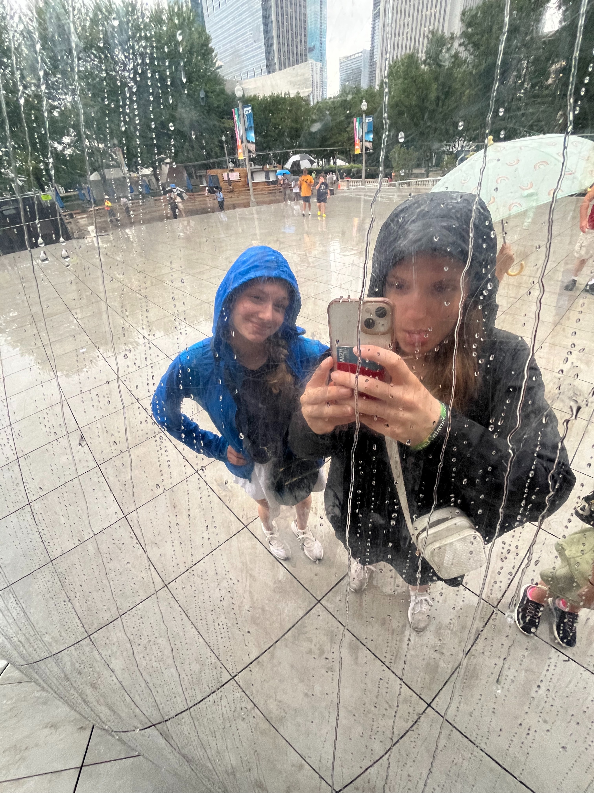
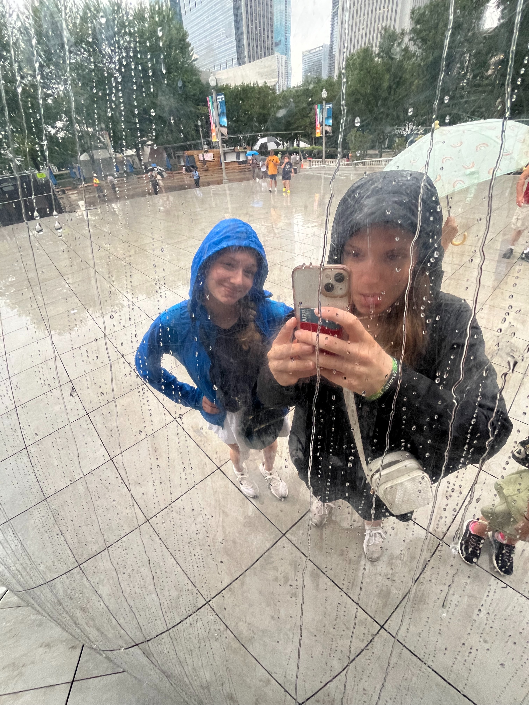
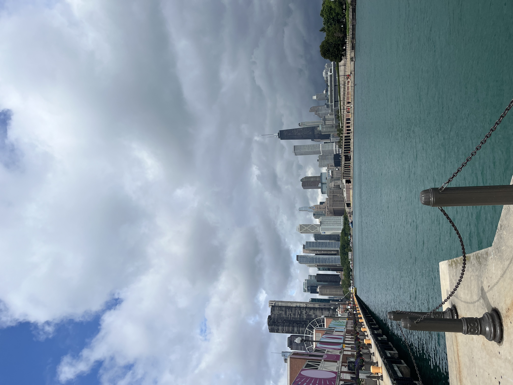
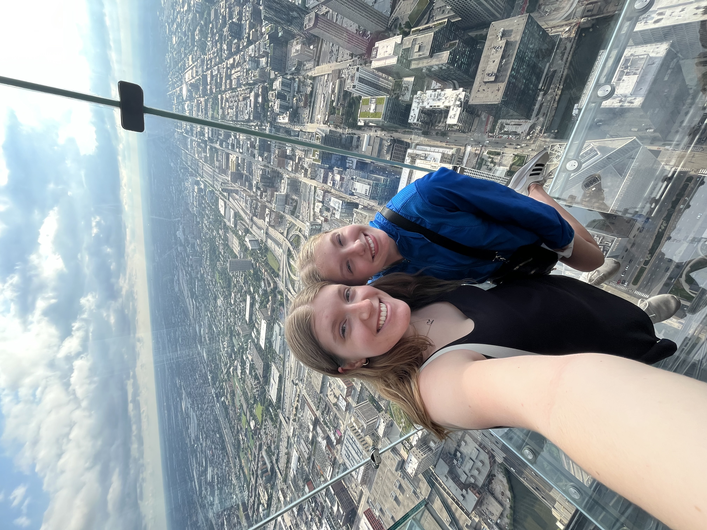

The Bean
One thing that we saw that day, which is one of the most popular attractions in Chicago, is The Bean! This is a picture of my sister and I in the reflection of The Bean.
Last summer my family took a day trip to Chicago, Illinois. We took the train down and it was super fun to see the different sites! I'm going to show a few of my favorite things that we saw that day!
One thing that we saw that day, which is one of the most popular attractions in Chicago, is The Bean! This is a picture of my sister and I in the reflection of The Bean.
Navy Pier is a cool place in Chicago. You can shop, eat, or see the City from the top of a giant Ferris Wheel. One of my favorite things about it was being able to see the City right next to Lake Michigan.
Willis Tower is a bigger attaction in Chicago as well. Here, we went up to the Skydeck on the 103rd floor and stepped out onto a glass box where you could see an incredible view of the city.
